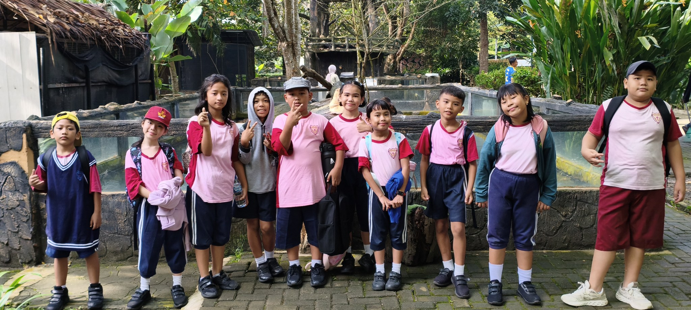
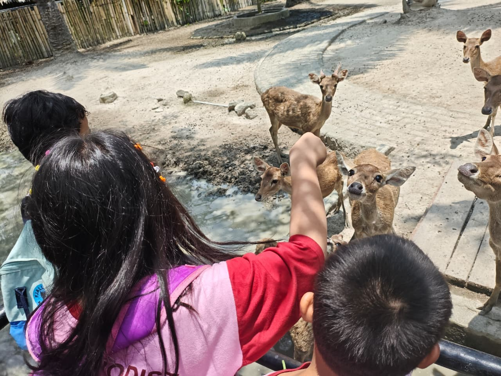
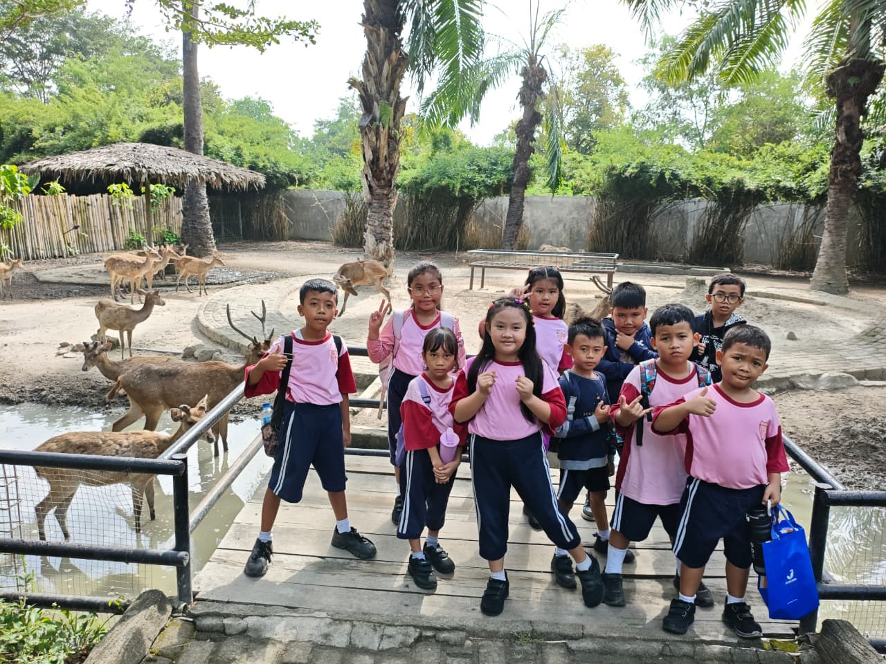
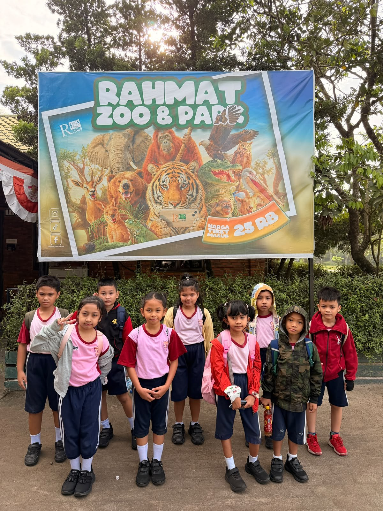
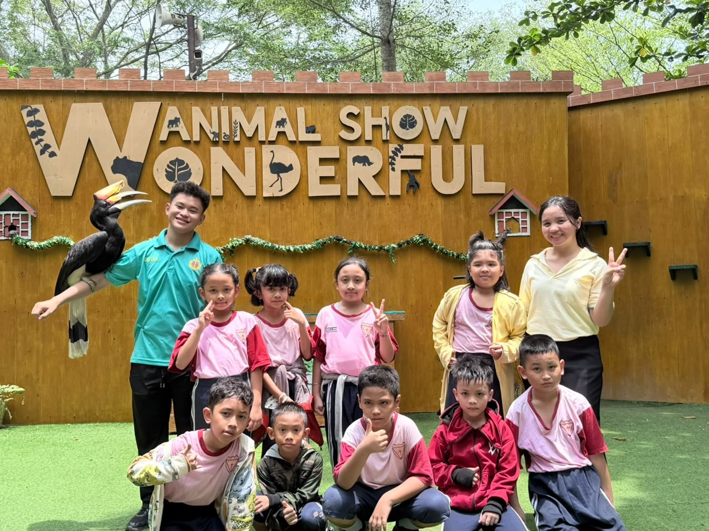
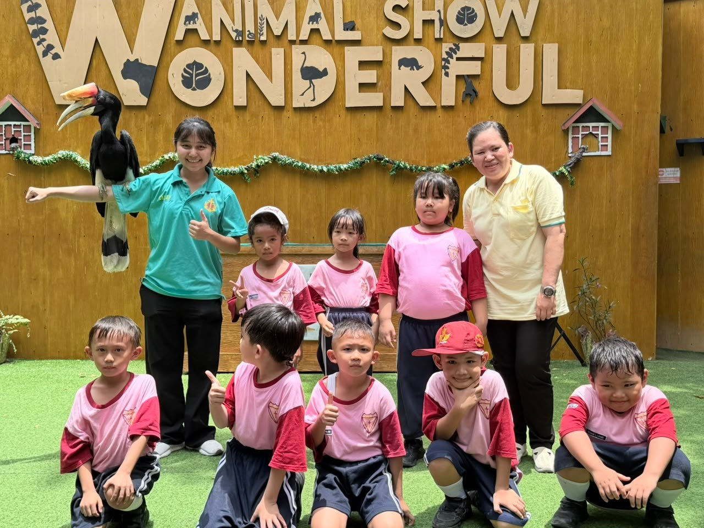
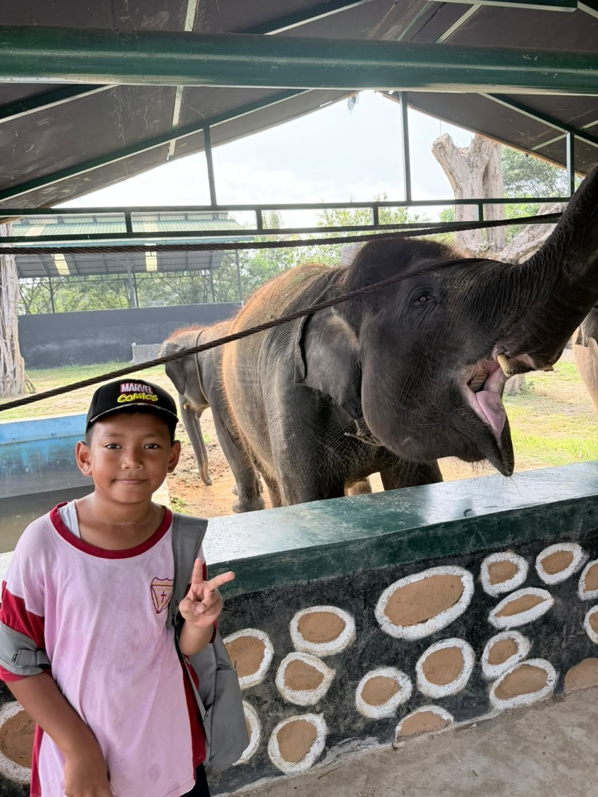
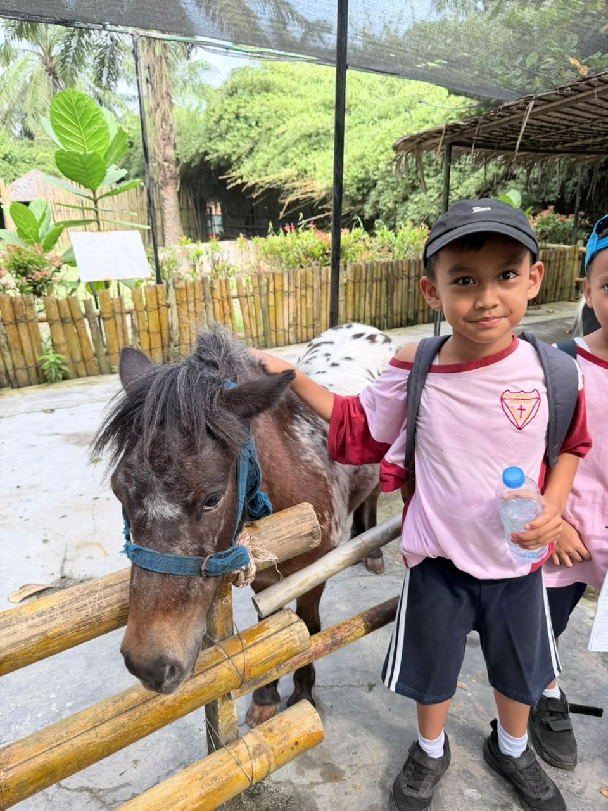
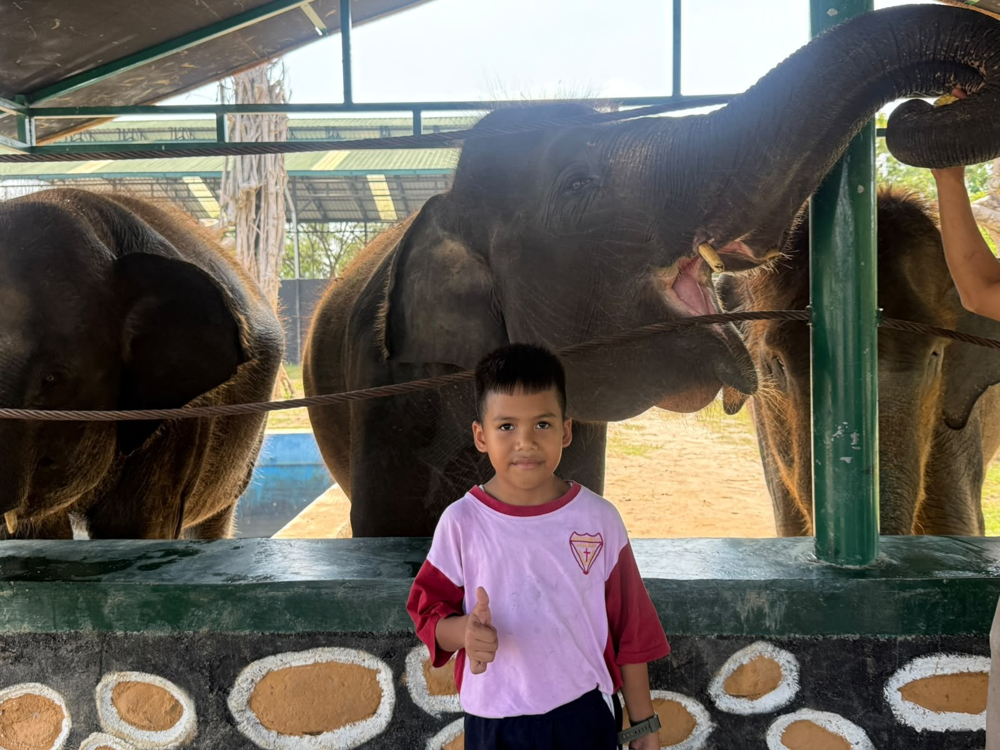

Pada hari Sabtu, 19 September 2026, siswa-siswi SD Swasta Methodist-11 mengikuti kegiatan kunjungan edukatif (field trip) ke Kebun Binatang. Pembelajaran di luar kelas (outdoor learning) ini bertujuan untuk mengenalkan keanekaragaman satwa, habitat alaminya, serta menumbuhkan rasa kepedulian terhadap lingkungan hidup sejak dini.
Seluruh siswa mengikuti kegiatan dengan penuh antusiasme, keceriaan, dan didampingi langsung oleh bapak dan ibu guru. Berikut dokumentasi serunya kegiatan:












